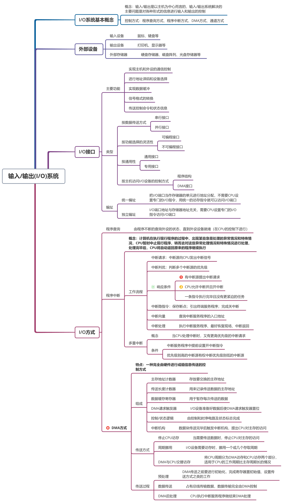
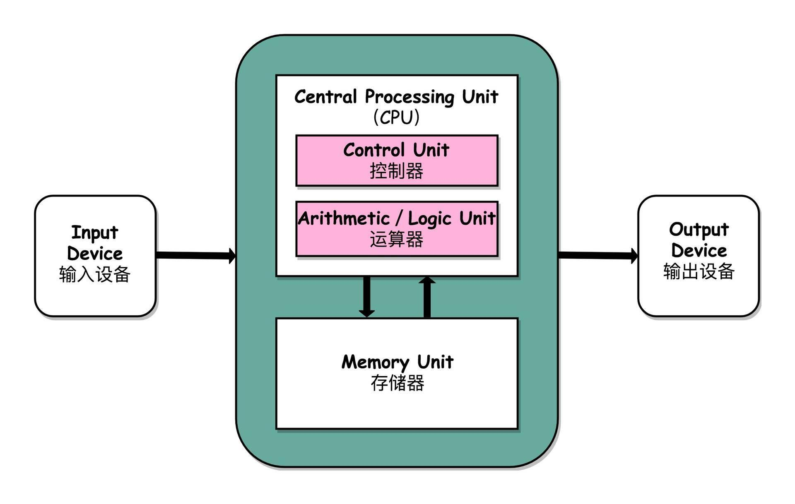

整数的二进制演示
请输入一个整数，查看其二进制原码与补码
原码: {{ binaryResult }}
补码: {{ twosComplementResult }}
原理
对于正整数，直接将其转换为二进制数即可。
对于负整数，先转换其绝对值为二进制数，然后求补码。
原码：
原码是最直观的二进制表示法，原码最左边的一个数字是符号位，正数的原码是其本身，负数的原码在最高位（符号位）加1，其余位表示该数的绝对值。
补码：
补码是计算机中用于表示整数的常用方法。正数的补码与其原码相同，负数的补码是其原码的逐位取反（除了符号位）后加1。
浮点数的二进制演示
请输入一个浮点数，查看其IEEE 754标准的二进制表示
浮点数的IEEE 754表示: {{ floatBinaryResult }}
原理
浮点数转换为二进制的原理基于IEEE 754标准。这个标准定义了浮点数在计算机中的表示方式、舍入规则、异常处理等。所谓的浮点数，是因为小数点可以像浮动一样移动，使用科学记数法来表示非常大或非常小的数。 IEEE 754标准通常定义了几种不同的精度，比如单精度（32位）和双精度（64位）浮点数。
符号位（1位）：最左边的一位是符号位，0表示正数，1表示负数。
指数位（8位）：接着是8位的指数部分，用来存储指数。这8位不是直接存储指数的实际值，而是存储指数值加上一个偏移（对于32位浮点数，这个偏移是127）。这样可以表示正指数和负指数。
尾数或有效位（23位）：剩下的23位是尾数，它用二进制表示小数点后面的数字。这23位没有包括小数点前面的整数部分，因为标准假设除非尾数是0，否则小数点前的数字总是1（这称为规格化），因此可以省略并在解码时隐式添加。
IEEE 754转换的大致步骤：
1,计算绝对值的二进制：先计算浮点数绝对值的二进制形式。
2,规格化：将这个二进制数转换成科学记数法，以1.xxxxx的形式表示。
3,计算指数bias：细节随精度变化，对于单精度浮点数，bias是127。
4,计算与存储真实指数：指数加上bias得到用于存储的指数。
5,存储尾数：去掉规格化步骤中的“1”，剩下的部分作为尾数存储。
指令集设计原理演示
指令集设计原理是计算机体系结构中的一个核心概念，它定义了一组指令，这些指令规定了计算机能够理解和执行的操作。指令集架构（ISA）包括基本数据类型、指令集、寄存器、寻址模式、存储体系、中断、异常处理以及外部I/O等
原理
在设计指令集时，需要考虑多个方面，包括：
1，指令的功能：指令集应该包含足够的指令来执行所有必要的操作，如数据传输、算术运算、逻辑运算、控制流等。
2，指令的格式：指令的编码应该简洁且易于解码，同时还要考虑指令长度的一致性和灵活性。
3，寄存器的使用：寄存器是有限的资源，指令集设计应该高效利用寄存器，同时提供足够的寄存器来支持常见的操作。
4，寻址模式：指令集应该提供多种寻址模式，以支持不同的数据访问需求。
5，性能与复杂性：设计者需要在指令集的性能和硬件实现的复杂性之间找到平衡点。
6，兼容性：新设计的指令集通常需要考虑与旧指令集的兼容性，特别是在更新现有系统时。
基于内存的计算机模型演示
{{ value.data }}
开机过程
Welcome to your computer
内存编址和分段
线性和物理地址空间：操作系统管理的内存可以分为逻辑（或虚拟）内存和物理内存。物理内存对应电脑中实际的RAM芯片，而逻辑内存是操作系统为应用程序提供的一种抽象层，使得每个程序都好像在使用一大块连续的内存。
内存分段：这是一种内存管理技术，它将内存分为不同的逻辑段，每个段可以是代码、数据或栈。每个段由段基址（Start address of the segment）和偏移量（An offset into that segment）组成。访问内存时，真实的物理地址是用段基址加上偏移量计算出来的。
内存分页：这是现代操作系统常用的内存管理方式，它通过把虚拟内存和物理内存都分割成固定大小的页来管理内存。每个虚拟页会被映射到物理内存的页框架中（不一定要是连续的）。
寻址方式：计算机在访问内存时采用了不同的寻址方式。最常见的是直接和间接寻址。直接寻址是指指令直接包含内存地址或偏移量；间接寻址则是指指令指向寄存器或内存中的地址，而这个地址中存储了实际数据的地址。
寻址范围与寻址能力：处理器的寻址范围通常称为它的寻址能力，对于32位处理器，它可以直接寻址到4GB的内存（ 个不同的地址）。64位处理器可以寻址更大的内存空间。
分段演示
段表
| 段 | 基址 |
|---|---|
| {{ entry.seg }} | {{ entry.base }} |
转换结果
{{ translationError }}
物理地址: {{ physicalAddress }}
处理器计算和I/O过程
CPU模拟器
输出
{{ output }}
I/O过程


{{ IOstep.title }}
{{ IOstep.description }}
"JUMP"基本流程模块
汇编指令模拟器
寄存器状态
| 寄存器 | 值 |
|---|---|
| {{ register }} | {{ value }} |
高级语言到二进制代码编译过程
源代码:
词法分析结果:
{{ lexicalAnalysis }}
语法分析结果:
{{ syntaxAnalysis }}
语义分析结果:
{{ semanticAnalysis }}
中间代码生成结果:
{{ intermediateCode }}
代码优化和目标代码生成结果:
{{ targetCode }}
二进制代码生成结果:
{{ machineCode }}
具有运行时环境（如JRE）的代码运行过程演示
{{ step.title }}
{{ step.description }}